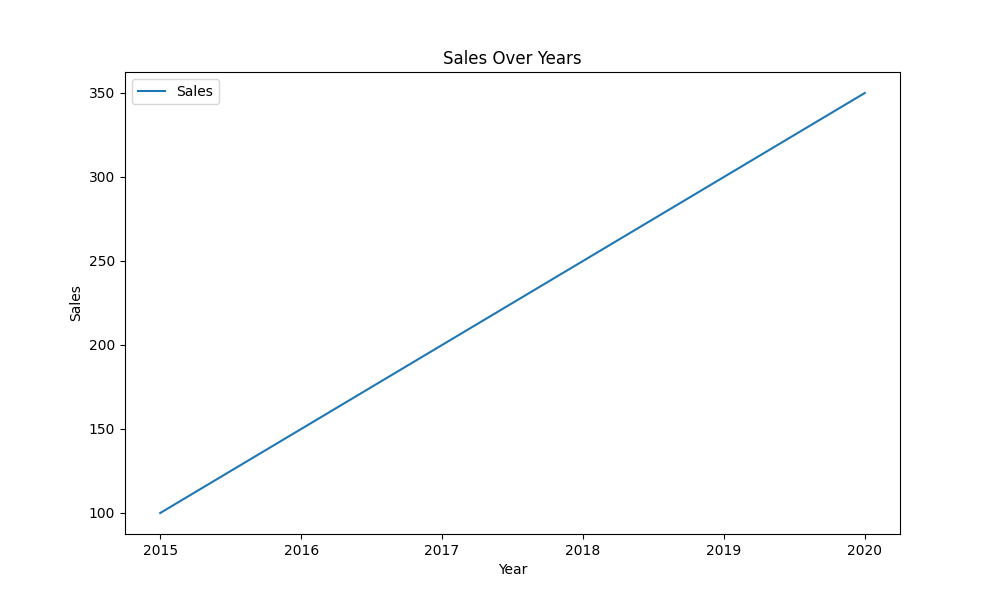
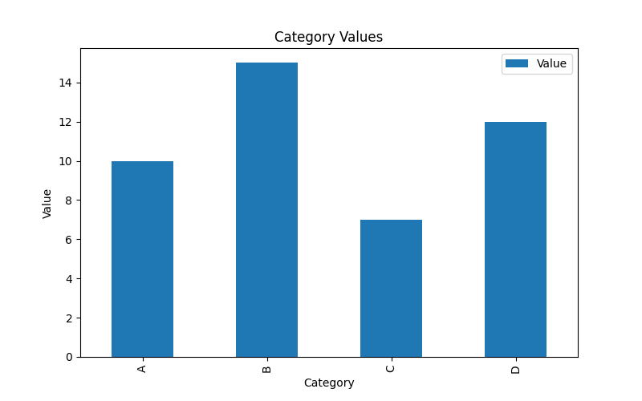
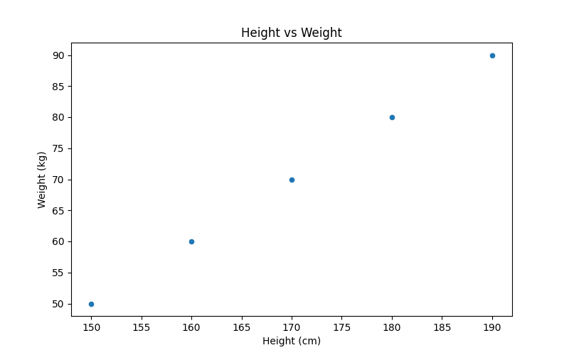
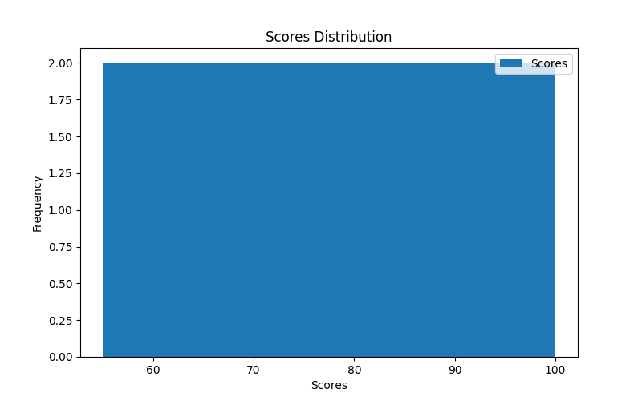
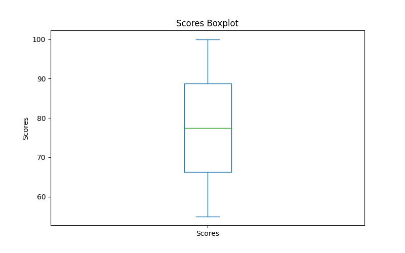
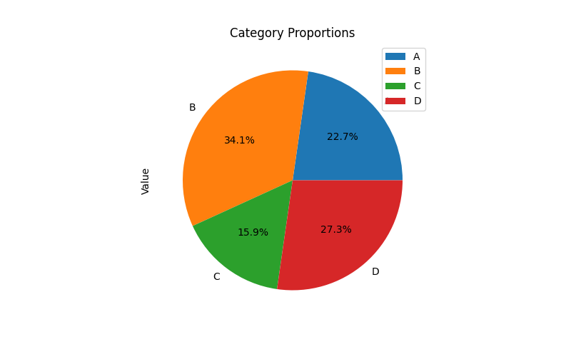
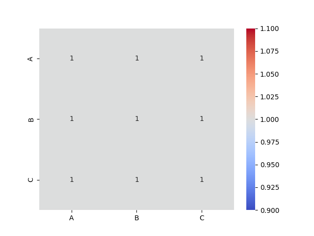
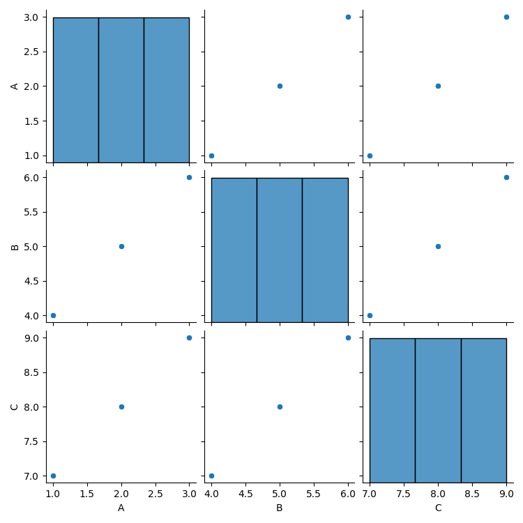
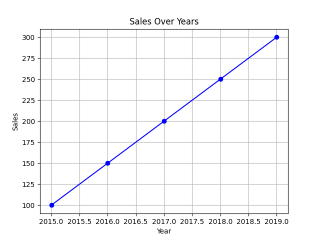

Pandas データ可視化
データ可視化はデータ分析における重要な要素であり、データのパターン、傾向、関係性をより深く理解し解釈するのに役立ちます。
データ可視化は、グラフや図表などの形式を通じて、複雑な数値や統計情報を理解しやすい画像に変換し、意思決定を容易にします。
Pandas はMatplotlibとSeabornなどの可視化ライブラリとの統合を提供しており、データの可ラ化を簡単かつ効率のにします。
Pandas では、データ可視化機能は主にDataFrame.plot()とSeries.plot()メソッドによって実現されます。これらのメソッドは実際には Matplotlib ライブラリのラッパーであり、グラフの描画プロセスを簡素化します。
| グラフの種類 | 説明 | メソッド |
|---|---|---|
| 折れ線グラフ | データの時間または他の連続変数に伴う変化傾向を表示する | df.plot(kind='line') |
| 棒グラフ | 異なるカテゴリのデータを比較する | df.plot(kind='bar') |
| 水平棒グラフ | 異なるカテゴリのデータを比較するが、棒は水平に配置される | df.plot(kind='barh') |
| ヒストグラム | データの分布を表示する | df.plot(kind='hist') |
| 散布図 | 2つの数値変数間の関係を表示する | df.plot(kind='scatter', x='col1', y='col2') |
| 箱ひげ図 | 中央値や四分位数などを含むデータの分布を表示する | df.plot(kind='box') |
| 密度プロット | データの密度分布を表示する | df.plot(kind='kde') |
| 円グラフ | 全体における各部分の割合を表示する | df.plot(kind='pie') |
| エリアグラフ | データの累計値を表示する | df.plot(kind='area') |
Pandas のデータ可視化の基本的な機能とメソッドは、日常のデータ可視化のほとんどのニーズを満たすことができますが、より複雑な可視化を実現する場合は、Matplotlib や Seaborn と組み合わせて使用し、より細かいグラフのカスタマイズを行うことができます。
一、Pandas データ可視化の概要
Pandas が提供するplot()メソッドを使用すると、折れ線グラフ、棒グラフ、ヒストグラム、散布図など、さまざまな種類のグラフを簡単に描画できます。plot()メソッドには多くのパラメータがあり、グラフのスタイル、色、ラベルなどをカスタマイズできます。
1. 基本的なplot()メソッド
| パラメータ | 説明 |
|---|---|
kind |
グラフの種類。対応：'line', 'bar', 'barh', 'hist', 'box', 'kde', 'density', 'area', 'pie'などの種類 |
x |
x 軸のデータ列を設定する |
y |
y 軸のデータ列を設定する |
title |
グラフのタイトル |
xlabel |
x 軸のラベル |
ylabel |
y 軸のラベル |
color |
グラフの色を設定する |
figsize |
グラフのサイズ（幅, 高さ）を設定する |
legend |
凡例を表示するかどうか |
2. よく使用されるグラフの種類
| グラフの種類 | 説明 | 主な用途 |
|---|---|---|
| 折れ線グラフ | 時間の経過に伴うデータの傾向を表示するために使用する | df.plot(kind='line') |
| 棒グラフ | カテゴリ間の比較データを表示するために使用する | df.plot(kind='bar') |
| 水平棒グラフ | 棒グラフに似ているが、棒は水平である | df.plot(kind='barh') |
| ヒストグラム | データの分布（頻度分布）を表示するために使用する | df.plot(kind='hist') |
| 散布図 | 2つの数値変数間の関係を表示するために使用する | df.plot(kind='scatter', x='col1', y='col2') |
| 箱ひげ図 | データの分布、外れ値、四分位数を表示するために使用する | df.plot(kind='box') |
| 密度プロット | データの密度分布を表示するために使用する | df.plot(kind='kde') |
| 円グラフ | 各部分が全体に占める割合を表示するために使用する | df.plot(kind='pie') |
| エリアグラフ | 累計値を表示するためのグラフ（折れ線グラフに似ているが、色で塗りつぶされている） | df.plot(kind='area') |
二、データ可視化の例
1. 折れ線グラフ (Line Plot)
折れ線グラフは通常、データの時間の経過に伴う変化傾向を示すために使用されます。
例
import matplotlib.pyplot as plt
# サンプルデータ
data = {'Year': [2015, 2016, 2017, 2018, 2019, 2020],
'Sales': [100, 150, 200, 250, 300, 350]}
df = pd.DataFrame(data)
# 折れ線グラフを描画する
df.plot(kind='line', x='Year', y='Sales', title='Sales Over Years', xlabel='Year', ylabel='Sales', figsize=(10, 6))
plt.show()
出力：

2. 棒グラフ (Bar Chart)
棒グラフは、異なるカテゴリ間の比較を示すために使用され、特に離散データに適しています。
例
import matplotlib.pyplot as plt
# サンプルデータ
data = {'Category': ['A', 'B', 'C', 'D'],
'Value': [10, 15, 7, 12]}
df = pd.DataFrame(data)
# 棒グラフを描画する
df.plot(kind='bar', x='Category', y='Value', title='Category Values', xlabel='Category', ylabel='Value', figsize=(8, 5))
plt.show()
出力：

3. 散布図 (Scatter Plot)
散布図は、2つの数値変数間の関係を示すために使用されます。
例
import matplotlib.pyplot as plt
# サンプルデータ
data = {'Height': [150, 160, 170, 180, 190],
'Weight': [50, 60, 70, 80, 90]}
df = pd.DataFrame(data)
# 散布図を描画する
df.plot(kind='scatter', x='Height', y='Weight', title='Height vs Weight', xlabel='Height (cm)', ylabel='Weight (kg)', figsize=(8, 5))
plt.show()
出力：

4. ヒストグラム (Histogram)
ヒストグラムは、データの分布を表示するために使用され、特にデータの頻度分布を記述するために使用されます。
例
import matplotlib.pyplot as plt
# サンプルデータ
data = {'Scores': [55, 70, 85, 90, 60, 75, 80, 95, 100, 65]}
df = pd.DataFrame(data)
# ヒストグラムを描画する
df.plot(kind='hist', y='Scores', bins=5, title='Scores Distribution', xlabel='Scores', figsize=(8, 5))
plt.show()
出力：

5. 箱ひげ図 (Box Plot)
箱ひげ図は、中央値、四分位数、外れ値など、データの分布状況を示すために使用されます。
例
import matplotlib.pyplot as plt
# サンプルデータ
data = {'Scores': [55, 70, 85, 90, 60, 75, 80, 95, 100, 65]}
df = pd.DataFrame(data)
# 箱ひげ図を描画する
df.plot(kind='box', title='Scores Boxplot', ylabel='Scores', figsize=(8, 5))
plt.show()
出力：

6. 円グラフ (Pie Chart)
円グラフは、各部分が全体に占める割合を示すために使用されます。
例
import matplotlib.pyplot as plt
# サンプルデータ
data = {'Category': ['A', 'B', 'C', 'D'],
'Value': [10, 15, 7, 12]}
df = pd.DataFrame(data)
# 円グラフを描画する
df.plot(kind='pie', y='Value', labels=df['Category'], autopct='%1.1f%%', title='Category Proportions', figsize=(8, 5))
plt.show()
出力：

三、Seaborn 可視化
Seaborn は Matplotlib をベースにした高度なデータ可視化ライブラリであり、より美しく、より使いやすいグラフと、より豊富な統計グラフの種類を提供します。
Pandas では、Seaborn と直接組み合わせて使用できます。
ヒートマップ（Heatmap）：
例
import seaborn as sns
import matplotlib.pyplot as plt
# サンプルデータ
data = {'A': [1, 2, 3], 'B': [4, 5, 6], 'C': [7, 8, 9]}
df = pd.DataFrame(data)
# ヒートマップを描画する
sns.heatmap(df.corr(), annot=True, cmap='coolwarm')
plt.show()
出力：

データセット内のすべての数値特徴量間の散布図行列:
例
import seaborn as sns
import matplotlib.pyplot as plt
# サンプルデータ
data = {'A': [1, 2, 3], 'B': [4, 5, 6], 'C': [7, 8, 9]}
df = pd.DataFrame(data)
sns.pairplot(df)
plt.show()
出力：

四、Matplotlib の高度なカスタマイズ
Pandas が提供するplot()メソッドを使用する以外にも、Matplotlib はより柔軟なカスタマイズ機能を提供できます。例えば、タイトルやラベルの追加、グラフスタイルの設定、座標軸の調整などです。
例
import seaborn as sns
import matplotlib.pyplot as plt
# サンプルデータ
data = {'Year': [2015, 2016, 2017, 2018, 2019],
'Sales': [100, 150, 200, 250, 300]}
df = pd.DataFrame(data)
# 折れ線グラフを描画する
plt.plot(df['Year'], df['Sales'], color='blue', marker='o')
# カスタマイズ
plt.title('Sales Over Years')
plt.xlabel('Year')
plt.ylabel('Sales')
plt.grid(True)
# 表示
plt.show()
出力：

その他の拡張